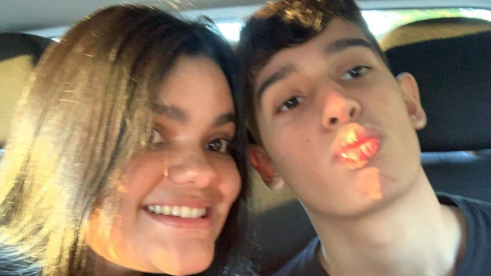
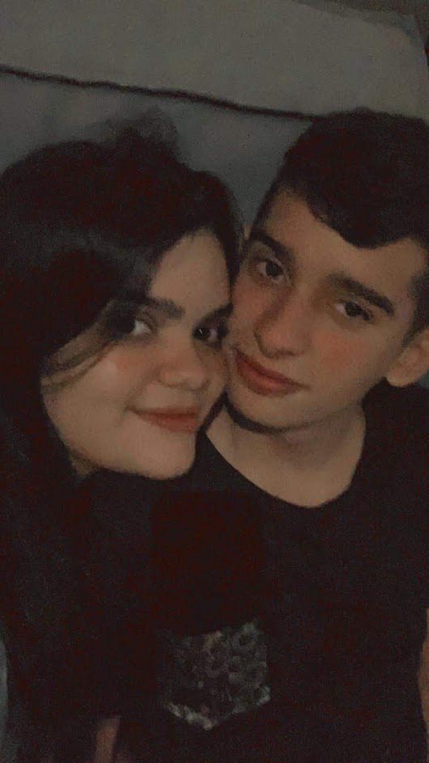
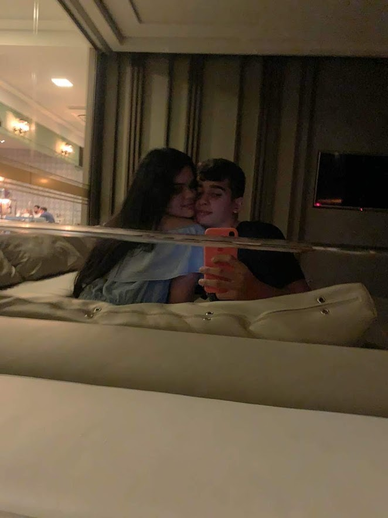
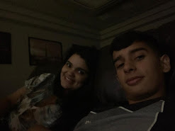
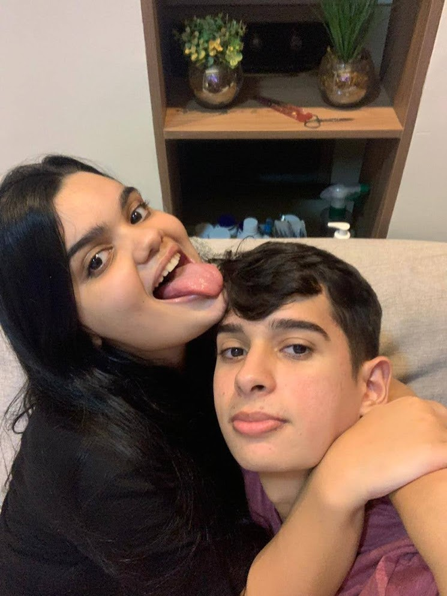
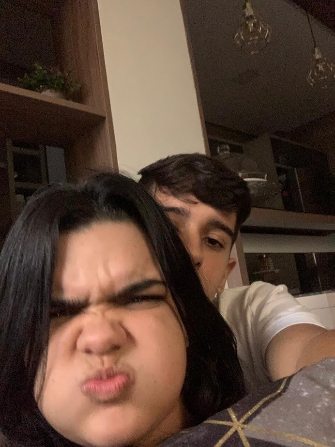
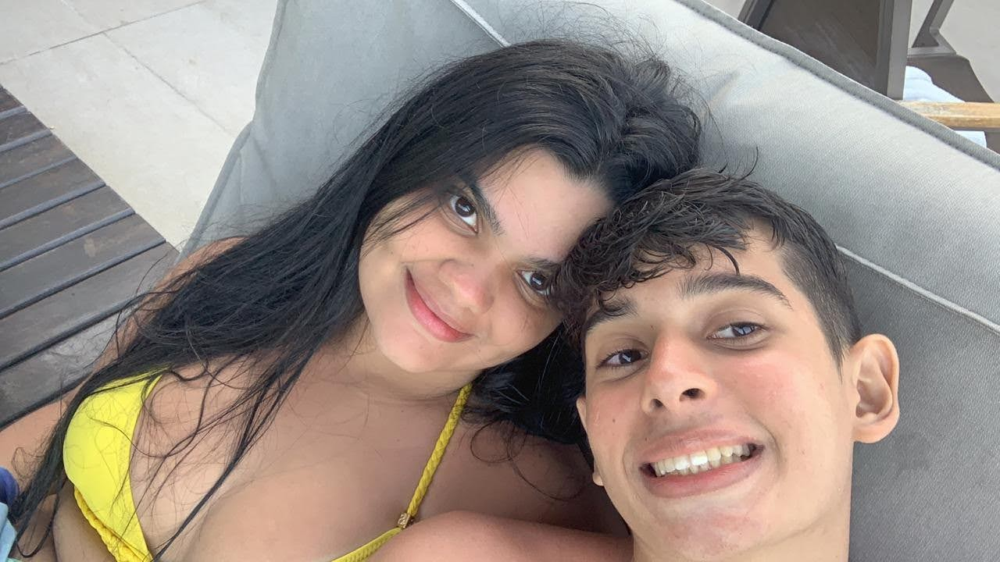

pra minha princesa. 💘
Amor, você foi algo que aconteceu tão de repente pra mim, mas mudou tudo na minha vida. Mudou a forma como eu enxergo o mundo, como eu trato as pessoas, como eu as amo, me transformou numa pessoa mil vezes melhor. Você é uma menina muito especial, deixa todos que estão ao seu redor felizes, consegue transformar o humor de todo mundo. Cada dia que a gente conversava, mais eu ficava apaixonado pela menina incrível que eu tava conhecendo e me aproximando cada vez mais. Você é muito Clara, eu sempre te disse isso, você é muito especial, você se diferencia pela sua forma de amar todo mundo, e esse jeito me fascina todos os dias, eu te amo.
──────────────
Lembra a primeira vez que a gente saiu? A gente conversava já um tempinho a gente foi se conhecer melhor e se falar mais ainda no açaí, passamos a tarde todinha contanto coisas mais íntimas da gente, se paquerando meio daquele jeito tímido, dando beijinho na mão...foi tão bom. Eu fiquei nervoso no uber pensei que não ia ter assunto e que ia ser estranho, mas foi a coisa mais natural do mundo. Nesse dia eu já senti que tinha alguma coisa diferente com essa menina, e eu tava certo mesmo.
──────────────



Eu lembro que por muito tempo a gente só tinha essas fotos e que quando a gente ta com muita saudades a gente ia olhar e eram sempre as mesmas porque a gente não tava se vendo, mas sempre tinha essas fotinhas pra a gente se lembrar o quão bom é quando a gente ta junto, gente ri e se diverte muito, ri demais é muito bom ta contigo entende meu jeito e eu entendo o seu parece que a gente se completa bem direitinho.
──────────────
──────────────
E o nosso dengo?
Amor nosso dengo é uma coisa tão gostosa né, a gente se agarra parece que vai entrar dentro do outro de tanto amor, e não tem momento mais feliz do que quando a gente acha uma posição boa pra chamego é muito gostoso. Tudo contigo é assim a maior e melhor felicidade, o melhor chamego eu só sou feliz contigo


